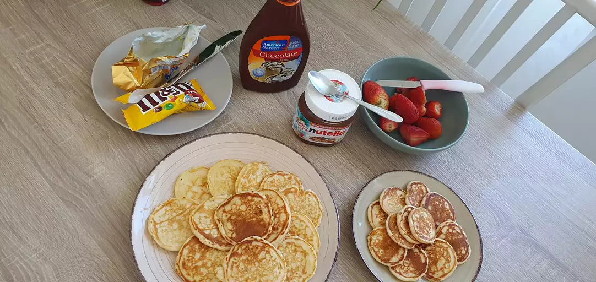

Good Old-Fashioned Pankcakes

Tasty pancakes to make for breakfast!
Even if you aren't a cook, you can still make something delicious! If you wake up one morning hungry
for something to eat, well your in luck. These pancakes are easier to make than you think.
This pancake recipe produces thick, fluffy, and all-around delicious pancakes with just a few ingredients that
are probably already in your kitchen (and it's so much better than the boxed stuff). Well, what are you waiting
for, start cooking!
Pancake Ingredients
- 1 ½ cups all-purpose flour
- 3 ½ teaspoons baking powder
- 1 tablespoon white sugar
- ¼ teaspoon salt, or more to taste
- 1 ¼ cups milk
- 3 tablespoons butter, melted
- 1 egg
Steps
- Sift flour, baking powder, sugar, and salt together in a large bowl. Make a well in the center and add milk, melted butter, and egg; mix until smooth.
- Heat a lightly oiled griddle or pan over medium-high heat.
- Pour or scoop the batter onto the griddle, using approximately 1/4 cup for each pancake; cook until bubbles form and the edges are dry, about 2 to 3 minutes.
- Flip and cook until browned on the other side.
- Repeat with remaining batter.
Back to Home Page